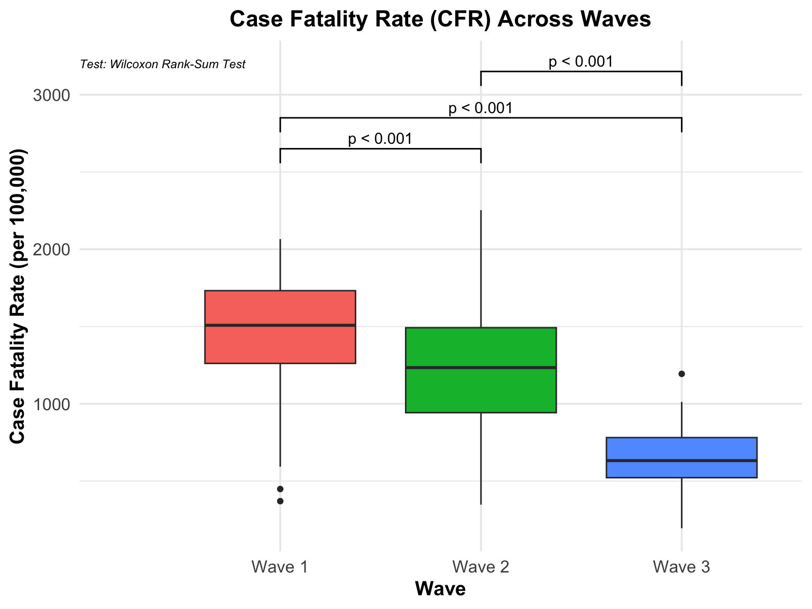

BST 260 Final Project - COVID-19 Data
Abstract
The COVID-19 pandemic has greatly impacted global health. Especially within the United States, different states experienced significant variations in outcomes over time due to regional differences. This study examines the evolution of COVID-19 virulence and its effects from January 2020 to November 2024, leveraging data from the US Census Bureau and the Centers for Disease Control and Prevention on population estimates, cases, deaths, and hospitalizations. We identified three pandemic waves and assessed state-level performance using metrics such as Case Fatality Rate (CFR), Hospitalization Rate (HR), and Death Proportion (DP).
Our analysis results revealed a pronounced decline in virulence of the COVID-19 virus across three waves, as evidenced by significant reductions in CFR and DP across waves, despite slightly increased transmissibility in later variants. States with stronger healthcare infrastructure and proactive public health policies, such as Hawaii and Massachusetts, generally exhibited lower mortality rates on average. On the contrary, regions with limited resources, like South Dakota and West Virginia, faced higher excess mortality.
Statistical modeling and excess mortality analysis confirm that COVID-19 was the primary driver of increased deaths, and regional disparities were evident. These results underscore the importance of public health systems and targeted interventions in mitigating the impact of pandemics.
Introduction
The COVID-19 pandemic, first reported in Wuhan in late 2019, is a respiratory disease caused by the severe acute respiratory syndrome coronavirus 2 (SARS-Cov-2) (Shi et al. 2020; Covid and Team 2021). The SAR-Cov-2 virus rapidly spread from China to the rest of the world in early 2020, and has arguably constituted the most severe global health crisis the 21st century has seen so far. Beyond its direct impact on human health, the outbreak of COVID-19 has exerted an indelible influence on societies, economies, and the healthcare systems. In the early phase of the COVID-19 pandemic, it was known to cause irreversible pneumonia, high fever, and dry cough (Madabhavi, Sarkar, and Kadakol 2020). Silvestri et al. (2020) identified four stages of the early variants of the SARS-Cov-2 virus: upper respiratory infection, pneumonia, cytokine storm, and in the worse scenario, death (Stasi et al. 2020).
The rapid transmission of the COVID-19 virus was possibly due to its unique characteristic: asymptomatic transmission. Compared with coronaviruses identified previously such as the MERS-Cov, many of the COVID-19 infected patients showed no symptoms during the initial stages of the infection. Despite being asymptomatic, these individuals could unknowingly act as carriers, spreading the virus through aerosols, bodily fluids, or airborne particles (Gao et al. 2021). The feature accelerated the global spread of the COVID-19 virus, and simultaneously hindered the containment efforts led by the healthcare agencies. What’s more, as the pandemic progressed and vaccines were developed, the SARS-Cov-2 virus exhibited a high rate of mutation, leading to variants including Alpha, Beta, Delta, and Omicron. These variants showed differences in their transmissibility, virulence, and the ability to evade the immune system. Because of this, even vaccines, which used to be taken as the ultimate measure to end any pandemic, proved to fall short of people’s expectation in controlling this worldwide crisis (Vasireddy et al. 2021). As a result, the majority of the governments announced emergency measures such as mask mandates, social distancing, regular sterilization, and even full lock-down of cities (Koh 2020).
Especially in the United States, the COVID-19 pandemic has been complicated and exacerbated by various factors (Omer, Malani, and Del Rio 2020; Covid and Team 2021). Given the high degree of autonomy of each state in the US, significant variations could be seen across states due to discrepancies in regional public health policies, demographics, and economic development. Previous studies have suggested that the ethnic minorities, middle- and low-income populations, and rural communities were particularly more vulnerable to this emergency. These populations often suffer from pre-existing health inequities and consequently disproportional rates of mortality were reported (Alcendor 2020; Wilder 2021).
The US Centers for Disease Control and Prevention (CDC) provides an excellent platform for collecting and sharing COVID-19 related data. These data enable us to study the progression and impact of COVID-19 throughout the pandemic period. We can expect that different states might have responded differently: adopting distinct strategies for containment and mitigation. Additionally, as the COVID-19 virus mutated, multiple waves could be identified, which were driven by seasonal changes, vaccine effectiveness, and the fatality rate. Understanding these patterns is vital to assessing the evolution of the SARS-Cov-2 virus, regional differences, and the virulence over time.
In this project, we examined the COVID-19 data provided by the CDC COVID-19 Response, including COVID-19 cases, COVID-related deaths, and hospitalization from Jan 25th, 2020 to Nov 30th, 2024. Using data analysis and visualization, this study aims to identify major waves of the COVID-19 pandemic in the US, and answer the following questions 1) which states generally responded to the pandemic better, 2) how the virulence of the SARS-Cov-2 virus evolved and examine regional differences and seasonal changes in the transmissibility of the virus. In addition, we also seek to estimate weekly excess mortality for each state during the pandemic period and investigate whether regional differences could be observed and COVID-19 was the driving factor. We hypothesize that states along the West and East Coasts would generally perform better during the pandemic due to stronger healthcare infrastructure. We also hypothesize that the COVID-19 virus became less virulent over time as viruses typically do not exhibit both high virulence and high transmissibility.
Methods
First, we constructed a population matrix using two datasets from the United States Census Bureau (USCB). For the years 2020 and 2021, we used observed annual population data for all states, which is available here https://www.census.gov/data/developers/data-sets/popest-popproj/popest.html. For the years 2022 and 2023, we used the Annual National Population Estimates data, which includes both national and state-level population estimates. It can be accessed through: https://www.census.gov/data/tables/time-series/demo/popest/2020s-state-total.html. These were combined to form a comprehensive population matrix. Finally, we applied a simple linear regression model to predict state-level population figures for 2024 based on trends observed in the preceding years, completing the dataset for 2020-2024. Our extrapolation stands under the assumption that the trends observed in preceding years would similarly be observed in 2024. This potentially poses some limitations of using linear regression model as there could be possible non-linear dynamics for year 2024 such as natural disasters in some states.
Next, we used the dataset from the Centers for Disease Control and Prevention (CDC), containing COVID-19 cases, COVID-related deaths, hospitalization, and vaccination data from January 25th, 2020 to November 30th, 2024. Data wrangling was conducted to store them as either weekly or daily data, enabling more interpretable analysis going forward. The corresponding wrangling scripts could be found in code/wrangle.R.
Finally, we constructed a deaths data for all causes for year 2020-2024 as this was salient in estimating the excess mortalities of the COVID-19 in the period of our interest. We first used the Weekly counts of deaths by Jurisdiction and Age data provided by National Center for Health Statistics (NCHS) to extract the historical data of “all-cause deaths” from years 2015-2019. Then, we fit a simple linear regression model per state predicting all-cause deaths by utilizing yearly trends and weekly trends for extrapolating 2020-2023 mortality by all causes (not limited to deaths caused by COVID-19). During the process of extrapolation, we fit other linear models by adding more complex seasonality terms such as sine / cosine of week or factorized weeks, but just simply fitting the simple linear model provided the most parsimonious and interpretable model. Similar to the estimation of the total population in 2024, this estimation is also based on the assumption that the all-cause mortality is linear on yearly trends and weekly trends.
Our analysis of COVID-19 virulence uses several analytic metrics, primarily Case Fatality Rate (CFR), Hospitalization Rate (HR), and Death Proportion (DP). These metrics are defined as follows:
\[ \text{CFR} = \frac{\text{Total Deaths}}{\text{Total Cases}} \times 100,000 \]
\[ \text{HR} = \frac{\text{Total Hospitalizations}}{\text{Total Cases}} \times 100,000 \]
\[ \text{DP} = \frac{\text{Total Deaths}}{\text{Total Population}} \times 100,000 \]
Also, to compare the three metrics stated above across waves, we used Wilcoxon rank-sum test for non-parametric comparisons. It assesses whether the distribution of a particular variable is significantly different between the two groups when the data does not meet the assumptions of normality required for a t-test. We set the null hypothesis to “the two groups come from populations with the same distribution”, and the alternative as “the two groups come from populations with different distributions”. In our research project, this would be interpreted as testing whether COVID-19 metrics (e.g. CFR, HR, DP) during Wave 1 vs. Wave 2 show significant difference between the two waves.
Our excess mortality analysis uses the definition Excess Mortality = Observed Deaths – Estimated Deaths to calculate excess mortality. Our methodology is that after fitting the linear model with outcome variable being excess deaths and predictor being covid deaths, if the summary statistics show high R-squared or significant p-value for \(\beta_{CovidDeaths}\), we conclude that covid deaths is a strong predictor, advocating the COVID-19 was indeed the culprit of the excess deaths in US states. We also visually check whether the COVID-19 is the cause of excess mortalities by drawing a weekly excess mortality plot with COVID-19 caused deaths plotted on top of it.
Overall our methods is robust since it divides the pandemic into specific waves, thus acknowledges the temporal and dynamic nature of the pandemic, allowing for contextual insights.
Analyses
Q1: Pandemic period from Jan 2020 to Nov 2024
The figure below displays the COVID-19 cases, deaths, and hospitalization rate per 100,000 people in each region of the US from 2020 to 2024.
As can be seen from the trend plot which depicts the rates of COVID-19 cases, deaths, and hospitalizations from 01/25/2021 to 11/30/2024, there seems to be 3 waves of COVID-19 spread. The first one occurs from Oct 2020 to Apr 2021, where a peak in cases, deaths, and hospitalizations can be observed. Likewise, it appears that there was another wave between Jul 2021 to early Dec 2021. Lastly, there was a wave from early Dec 2021 to Apr 2022.
First Wave
This period marked the first significant rise in COVID-19 rates, with sharp increases across all metrics: cases, deaths, and hospitalizations. The wave coincides with the colder months when indoor gatherings increased and may also reflect the impact of delayed public health measures or variants circulating during this time.
Second Wave
The summer and early winter of 2021 saw a resurgence in COVID-19 activity, driven largely by the spread of the Delta variant. This wave demonstrates a rapid increase in hospitalizations and deaths following the initial rise in cases. Despite vaccination efforts, breakthrough infections and the highly contagious nature of Delta played significant roles in this period.
Third Wave
The final and most intense wave depicted occurred during the winter of 2021-2022, fueled by the Omicron variant. While cases skyrocketed to unprecedented levels due to Omicron’s transmissibility, deaths and hospitalizations rose less dramatically than in previous waves, likely reflecting the variant’s comparatively milder effects and increased vaccination coverage. However, the healthcare system faced immense strain due to the sheer number of cases.
Q2: Deaths rate by state during each time period
From Oct 1st 2020 to Apr 1st 2021, overall this wave was arguably the most severe wave among all 3. The highest death rate per 100,000 people was reported in South Dakota (SD), with an average of 188.91 deaths among 100,000 people. Following South Dakota were North Dakota (177.97), Oklahoma (175.32), and Arkansas (150.17). There were also states which managed to contain the death rate below 50 per 100,000. For example, the lowest death rate was reported in Hawaii, which was only 9.12 deaths on average per 100,000 people, followed by Vermont (11.18), Alaska (26.48), Washington (39.58), Oregon (42.04), Puerto Rico (43.66), and Maine (47.19).
From July 1st 2021 to Dec 1st 2021, the COVID-19 variant seemed to be less virulent. The highest death rate per 100,000 people was reported in West Virginia (WV), with an average of 113.13 deaths among 100,000 people. Following West Virginia were Florida (111.62), Montana (111.30), and Wyoming (109.88). There were also states which managed to contain the death rate below 40 per 100,000. For example, the lowest death rate was reported in Washington D.C., which was only 12.09 deaths on average per 100,000 people, followed by Vermont (12.39), Connecticut (12.39), New York (17.04), and Hawaii (36.83).
For the third wave, the COVID-19 variant during the period seemed to grow more infectious and deadly. The highest death rate per 100,000 people was reported in West Virginia (WV) again, with an average of 103.73 deaths among 100,000 people. Following West Virginia were Ohio (102.05), New Mexico (96.78), and Kentucky (93.82). There were also states which managed to contain the death rate below 40 per 100,000. For example, the lowest death rate was reported in Hawaii, which was only 20.76 deaths on average per 100,000 people, followed by Alaska (27.69), Puerto Rico (28.21), Vermont (29.85), and Utah (33.22). Figures can be found in Supplementary Methods: Death rate of each state (3 waves).
We also compared the performance of each state across all 3 waves by taking the average of their death rate per 100,000 people. Results show that Oklahoma had the highest average death rate per 100,000, amounting to 120.00 deaths per 100,000 people, followed by West Virginia (115.33), Mississippi (109), Kentucky (107.42), Tennessee (106.92). There were also states which kept a relatively low death rate across waves. Namely, Vermont had an average death rate of only 17.81 per 100,000. Similarly, Hawaii had an average of 22.24 per 100,000, followed by Puerto Rico (30.94) New York (37.10), and Washington (40.07).
Generally, it can be seen that states in the northeastern part or the west coast of the US performed better than those in the middle or west US. It can also be observed that less populated states such as Vermont and Washington had lower death rates. But exceptions are also evident, for New York is rather populated but it was among the states with the lowest average death rates.

Q3: COVID-19 became less or more virulent across different periods
To evaluate if COVID-19 became less or more virulent across different time periods, we will employ three key metrics: cases fatality rate (CFR), hospitalization rate (HR), and death per population (DP). The CFR is defined as deaths per case, HR is defined as hospitalizations per case, and DP is defined as deaths per population. In the following analyses, we will analyze these key metrics with tables and visualizations.
Cases fatality rate, hospitalization rate, and death per population
| Wave | Total Cases | Total Deaths | Total Hospitalization | Total Population | CFR | HR | DP |
|---|---|---|---|---|---|---|---|
| Wave 1 | 22,403,089 | 348,013 | 1,714,882 | 334,955,562 | 1,553.42 | 7,654.67 | 103.90 |
| Wave 2 | 14,304,772 | 194,568 | 1,122,040 | 335,157,329 | 1,360.16 | 7,843.82 | 58.05 |
| Wave 3 | 30,709,203 | 194,326 | 1,183,261 | 336,099,114 | 632.79 | 3,853.12 | 57.82 |
Wave 1
During Wave 1, the United States experienced a total of 22,403,089 cases, with 348,013 deaths and 1,714,882 hospitalizations. The total population during this period was 334,955,562. Key metrics calculated include:
- Case Fatality Rate (CFR): 1,553.42 per 100,000 cases.
- Hospitalization Rate (HR): 7,654.67 per 100,000 cases.
- Death Proportion (DP): 103.90 deaths per 100,000 population.
Wave 2
Wave 2 saw a decrease in total cases and deaths compared to Wave 1, with 14,304,772 cases, 194,568 deaths, and 1,122,040 hospitalizations. The total population for this wave was 335,157,329. Metrics for this wave include:
- Case Fatality Rate (CFR): 1,360.16 per 100,000 cases.
- Hospitalization Rate (HR): 7,843.82 per 100,000 cases.
- Death Proportion (DP): 58.05 deaths per 100,000 population.
Wave 3
Wave 3 reported the highest total cases at 30,709,203, but a similar total death count compared to Wave 2, with 194,326 deaths and 1,183,261 hospitalizations. The total population during this wave was 336,099,114. Metrics calculated for Wave 3 include:
- Case Fatality Rate (CFR): 632.79 per 100,000 cases.
- Hospitalization Rate (HR): 3,853.12 per 100,000 cases.
- Death Proportion (DP): 57.82 deaths per 100,000 population.
For each wave, we computed the CFR, HR, and the DP. It can be observed that total cases peaked in Wave 3, while total deaths and hospitalizations decreased relative to Wave 1. The CFR showed a pronounced decline across waves, decreasing from 1,553.42 in Wave 1 to 632.79 in Wave 3 (59.26%). The HR also declined significantly by Wave 3, from 7,654.67 in Wave 1 to 3,853.12 in Wave 3. Similarly, the DP decreased steadily across the waves, dropping from 103.90 in Wave 1 to 57.82 in Wave 3.
We conducted pairwise statistical tests on the CFR, HR, and DP metrics to evaluate differences across the pandemic waves. Since these metrics did not follow a normal distribution, we utilized the Wilcoxon rank-sum test, a non-parametric alternative to the independent t-test. The analysis revealed a statistically significant decline in the CFR from Wave 1 to Wave 2, with a p-value of less than 0.001. Similarly, the CFR dropped significantly from Wave 2 to Wave 3. When comparing Wave 1 to Wave 3, the difference was also statistically significant at the 0.05 significance level.
For the HR, there was no statistically significant difference between Wave 1 and Wave 2, as indicated by a p-value of 0.757. However, a notable decline in HR was observed in Wave 3 compared to both Wave 1 and Wave 2, with p-values of less than 0.001. These findings demonstrate a clear downward trend in the CFR across all three waves, while the HR remained relatively stable between the first two waves before showing a significant reduction in the third wave.
Finally for the DP, there was a statistically significant difference between Wave 1 and Wave 2, with a p-value of less than 0.001. A highly significant difference was also observed between Wave 1 and Wave 3, indicating a sharp decline in DP over time. However, the comparison between Wave 2 and Wave 3 revealed no statistically significant difference, as evidenced by a p-value of 0.647. Figures can be found in Supplementary Methods: Pair-wise comparison of the CFR, HR, and DP using statistical tests.
Q4: Estimate excess mortality for each week for each state. Check if excess mortality can be explained by COVID-19

We are first using 2015-2019 US mortality data grouped by states to estimate the 2020-2023 mortality by all causes (not limited to deaths caused by COVID-19). Then we calculate excess mortality by subtracting the estimated deaths from observed deaths of 2020-2023. This is depicted as blue line in the plot. Now, we plot the deaths which the culprit is COVID-19 via red line to see whether the excess mortality is well explained by COVID-19. We can see that in most of the states, COVID-19 is indeed the main culprit of excess mortality from 2020-2023. However, some states such as New Hampshire, Oregon, Puerto Rico, and Washington do not have a similar trend of lines between COVID-19 deaths and Excess deaths, meaning COVID-19 does not explain the excess mortality well compared to other states.
Second, we conducted additional analysis of fitting the linear model with COVID-19 deaths being the covariate and excess deaths being the outcome variable. The results of the model advocated the findings that we have roughly found from the plot. The R-squared values of each state’s model showed that New Hampshire(0.236), Oregon(0.301), Puerto Rico(0.194), and Washington(0.257)’s respective R-squared values were all low compared to other states. Some states such as New Jersey, North Dakota, and South Dakota showed very high R-squared values of 0.851, 0.849, and 0.857 respectively which corresponded to the alignment of COVID-19 caused deaths and excess deaths in the plot. Detailed regression outputs can be found in Supplementary Methods: Regression (fitted) table of all states in the U.S..
Overall, we can conclude that COVID-19 fairly explains the excess mortality in the United States during 2020-2023 well by analyzing the plot and the regression table.
Q5. For each period compute the excess mortality rates by state. Describe which states did better or worse during the different periods.

| State | Excess Mortality | Population | Excess Mortality Rate per 100,000 | Wave | Rank |
|---|---|---|---|---|---|
| South Dakota | 16419.314 | 908473.0 | 1807.353 | Wave 1 | 1 |
| Mississippi | 51633.512 | 2943234.4 | 1754.312 | Wave 1 | 2 |
| Oklahoma | 70164.746 | 4020841.8 | 1745.026 | Wave 1 | 3 |
| Arkansas | 52176.618 | 3047415.4 | 1712.160 | Wave 1 | 4 |
| New Mexico | 35110.491 | 2114723.2 | 1660.288 | Wave 1 | 5 |
| Hawaii | 1447.598 | 1439376.6 | 100.571 | Wave 1 | 52 |
| Washington | 34028.332 | 7780112.0 | 437.376 | Wave 1 | 51 |
| New Hampshire | 6775.909 | 1396105.8 | 485.344 | Wave 1 | 50 |
| Maine | 6793.006 | 1385767.6 | 490.198 | Wave 1 | 49 |
| Massachusetts | 37083.374 | 6994548.2 | 530.175 | Wave 1 | 48 |
| West Virginia | 29595.602 | 1775810.4 | 1666.597 | Wave 2 | 1 |
| Alaska | 11892.841 | 733124.0 | 1622.214 | Wave 2 | 2 |
| Montana | 17743.049 | 1119461.6 | 1584.963 | Wave 2 | 3 |
| Wyoming | 8220.787 | 581598.8 | 1413.481 | Wave 2 | 4 |
| Mississippi | 41573.242 | 2943234.4 | 1412.502 | Wave 2 | 5 |
| New Jersey | 13175.832 | 9275981.8 | 142.042 | Wave 2 | 52 |
| Massachusetts | 11776.964 | 6994548.2 | 168.373 | Wave 2 | 51 |
| Maryland | 11487.566 | 6171589.2 | 186.136 | Wave 2 | 50 |
| Connecticut | 8306.713 | 3610627.6 | 230.063 | Wave 2 | 49 |
| New York | 50117.643 | 19713122.4 | 254.235 | Wave 2 | 48 |
| West Virginia | 22867.470 | 1775810.4 | 1287.720 | Wave 3 | 1 |
| New Mexico | 23042.651 | 2114723.2 | 1089.630 | Wave 3 | 2 |
| Oklahoma | 41694.305 | 4020841.8 | 1036.955 | Wave 3 | 3 |
| Kentucky | 45350.159 | 4516205.0 | 1004.165 | Wave 3 | 4 |
| Arizona | 70906.708 | 7355304.6 | 964.021 | Wave 3 | 5 |
| Hawaii | 4758.577 | 1439376.6 | 330.600 | Wave 3 | 52 |
| New York | 66754.672 | 19713122.4 | 338.631 | Wave 3 | 51 |
| Utah | 13825.447 | 3377227.8 | 409.373 | Wave 3 | 50 |
| Massachusetts | 29029.613 | 6994548.2 | 415.032 | Wave 3 | 49 |
| Washington | 36644.443 | 7780112.0 | 471.001 | Wave 3 | 48 |
We calculated each state’s excess mortality during three waves by estimating mortality based on the linear model fitted with the 2015-2019 mortality data and subtracting this from observed deaths.
For the first wave(Oct 1, 2020 – Apr 1, 2021): South Dakota, Mississippi, Oklahoma, Arkansas, and New Mexico had highest excess mortality rates. Hawaii, Washington, New Hampshire, Maine, and Massachusetts had lowest excess mortality rates. South Dakota and Mississippi showed significant excess mortality, because in these areas, they have limited healthcare access. And, Hawaii and Washington showed lower rates which they had early public health interventions and stronger healthcare systems.
For the second wave(Jul 1, 2021 – Dec 1, 2021): Starting from wave 2, the COVID-19 vaccine came out. West Virginia, Alaska, Montana, Wyoming, and Mississippi had the highest rates. New Jersey, Massachusetts, Maryland, Connecticut, and New York had the lowest rates. West Virginia and Mississippi had highest excess mortality rates because they had limited healthcare infrastructure and lower vaccination rate. States like New Jersey and Massachusetts had access to various healthcare resources with higher vaccination rates and effective policy that contributed to their lower excess mortality rates.
For the third wave(Dec 2, 2021 – Apr 1, 2022): Fueled by the Omicron variant, West Virginia, New Mexico, Oklahoma, Kentucky, and Arizona had the highest excess mortality rates. States with the lowest rates were Hawaii, New York, Utah, Massachusetts, and Washington. West Virginia and Oklahoma continued to show highest excess mortality. On the other hand, Hawaii and Massachusetts consistently performed well due to their effective public health policies.
Overall, the results above show that COVID-19 explains excess mortality in the United States during 3 waves and also how vaccination and public health systems are involved in the prevention of excess deaths during the pandemic.
Discussion
In this study, we analyzed COVID-19 data across the United States from January 2020 to November 2024, focusing on evaluating state-level performance during the pandemic. Our approach combined statistical modeling, excess mortality estimation, and comparisons across three defined pandemic waves. We divided the entire period into three waves, where peaks in cases, deaths, and hospitalizations could be observed. The first wave occurred from Oct 2020 to Apr 2021, and the other two waves were between Jul 2021 and early Dec 2021 and between from early Dec 2021 to Apr 2022. We used pre-pandemic mortality models based on historical data (2015–2019) to estimate expected deaths if COVID-19 did not happen, providing a standard baseline to identify excess mortality caused by COVID-19.
Our analysis showed significant differences between states and waves. During Wave 1, most states experienced the highest death rates. This was the beginning of the pandemic when vaccinations had not yet started. Excess mortality was highest in states like South Dakota and Mississippi where structural issues like limited healthcare resources complicated the situation. A few states, such as Hawaii and Washington, experienced much lower excess mortality due to more resilient healthcare systems and early interventions. During Wave 2, mortality metrics improved in many states as the COVID-19 vaccine rolled out. However, challenges remained, particularly in states like West Virginia and Alaska where healthcare access and vaccine distribution were constrained. States such as Massachusetts and New Jersey generally performed better due to effective public health policies and higher vaccination rates. Wave 3 showed the impact of the super spreader Omicron variant. While cases surged to record-high levels, mortality and hospitalization rates increased at a slower rate. However, states such as West Virginia and New Mexico continued to experience high excess mortality, highlighting persistent disparities in healthcare infrastructure. In contrast, states like Hawaii and New York maintained lower mortality rates, reflecting the effectiveness of sustained public health policies. These findings underscore the critical role of public health strategies, vaccination campaigns, and healthcare systems. States with well-implemented and consistent interventions performed better across all waves, while those with structural challenges, such as inadequate healthcare capacity and delayed public health responses, faced significantly higher mortality.
The strength of our study is the use of historical mortality data to establish a robust baseline for estimating excess mortality. By using a pre-pandemic mortality model, we established a more reliable framework against which to measure impacts of COVID-19. This study has limitations as well. First, our excess mortality estimation predicted by a simple linear model based on historical data, which may not capture non-linear or more complex patterns. Sensitivity analysis and model diagnostics could be performed to check the model assumptions. Second, the indirect effects of the pandemic such as delayed medical care or socioeconomic problems were not modeled but they likely contributed to excess mortality. Future studies should examine the long-term effects of the pandemic including indirect effects and how healthcare inequities contributed to observed disparities.
In conclusion, the findings of our study indicate that pandemic outcomes are not solely a function of COVID-19 transmissibility. Instead, it shows the interplay of COVID-19, health resources, and vaccination in shaping pandemic outcomes. According to our results, a balanced response to the pandemic, including primary prevention and healthcare, should begin with equitable access for all. States that were quick to take countermeasures and that had a stronger healthcare system achieved significantly better results. Eliminating systemic inequalities, particularly addressing issues in rural and marginalized communities, will be key to future public health crisis resilience.
Supplementary Methods
Death rate of each state (3 waves)


Pair-wise comparison of the CFR, HR, and DP using statistical tests

Regression (fitted) table of all states in the U.S.
| state_name | term | estimate | std.error | statistic | p.value | r.squared |
|---|---|---|---|---|---|---|
| Alabama | (Intercept) | 16.015 | 10.726 | 1.493 | 0.136 | 0.656 |
| Alabama | covid_deaths | 2.520 | 0.061 | 41.584 | 0.000 | 0.656 |
| Alaska | (Intercept) | 10.342 | 2.098 | 4.929 | 0.000 | 0.745 |
| Alaska | covid_deaths | 2.907 | 0.093 | 31.161 | 0.000 | 0.745 |
| Arizona | (Intercept) | 66.662 | 14.381 | 4.635 | 0.000 | 0.667 |
| Arizona | covid_deaths | 2.468 | 0.057 | 43.135 | 0.000 | 0.667 |
| Arkansas | (Intercept) | 50.810 | 7.686 | 6.610 | 0.000 | 0.521 |
| Arkansas | covid_deaths | 2.246 | 0.074 | 30.381 | 0.000 | 0.521 |
| California | (Intercept) | 124.611 | 54.343 | 2.293 | 0.022 | 0.683 |
| California | covid_deaths | 2.453 | 0.055 | 44.642 | 0.000 | 0.683 |
| Colorado | (Intercept) | 42.375 | 9.674 | 4.380 | 0.000 | 0.499 |
| Colorado | covid_deaths | 2.352 | 0.079 | 29.852 | 0.000 | 0.499 |
| Connecticut | (Intercept) | -26.603 | 7.583 | -3.508 | 0.000 | 0.671 |
| Connecticut | covid_deaths | 2.142 | 0.054 | 39.869 | 0.000 | 0.671 |
| Delaware | (Intercept) | 4.135 | 2.577 | 1.605 | 0.109 | 0.682 |
| Delaware | covid_deaths | 2.434 | 0.073 | 33.500 | 0.000 | 0.682 |
| District of Columbia | (Intercept) | 7.151 | 3.511 | 2.037 | 0.042 | 0.475 |
| District of Columbia | covid_deaths | 2.311 | 0.120 | 19.224 | 0.000 | 0.475 |
| Florida | (Intercept) | 66.037 | 37.743 | 1.750 | 0.081 | 0.631 |
| Florida | covid_deaths | 2.251 | 0.056 | 39.957 | 0.000 | 0.631 |
| Georgia | (Intercept) | 55.093 | 19.054 | 2.891 | 0.004 | 0.629 |
| Georgia | covid_deaths | 2.559 | 0.064 | 39.700 | 0.000 | 0.629 |
| Hawaii | (Intercept) | -3.694 | 2.824 | -1.308 | 0.192 | 0.577 |
| Hawaii | covid_deaths | 2.719 | 0.117 | 23.161 | 0.000 | 0.577 |
| Idaho | (Intercept) | 14.203 | 4.537 | 3.130 | 0.002 | 0.559 |
| Idaho | covid_deaths | 2.311 | 0.080 | 28.872 | 0.000 | 0.559 |
| Illinois | (Intercept) | -30.451 | 23.468 | -1.298 | 0.195 | 0.552 |
| Illinois | covid_deaths | 2.538 | 0.075 | 33.787 | 0.000 | 0.552 |
| Indiana | (Intercept) | -54.247 | 14.871 | -3.648 | 0.000 | 0.568 |
| Indiana | covid_deaths | 2.509 | 0.071 | 35.145 | 0.000 | 0.568 |
| Iowa | (Intercept) | -20.996 | 7.770 | -2.702 | 0.007 | 0.492 |
| Iowa | covid_deaths | 2.228 | 0.079 | 28.329 | 0.000 | 0.492 |
| Kansas | (Intercept) | 6.016 | 7.270 | 0.827 | 0.408 | 0.544 |
| Kansas | covid_deaths | 2.440 | 0.079 | 30.851 | 0.000 | 0.544 |
| Kentucky | (Intercept) | -4.659 | 11.641 | -0.400 | 0.689 | 0.521 |
| Kentucky | covid_deaths | 2.417 | 0.076 | 31.657 | 0.000 | 0.521 |
| Louisiana | (Intercept) | 12.740 | 10.107 | 1.261 | 0.208 | 0.612 |
| Louisiana | covid_deaths | 2.539 | 0.069 | 36.975 | 0.000 | 0.612 |
| Maine | (Intercept) | 24.393 | 6.042 | 4.038 | 0.000 | 0.238 |
| Maine | covid_deaths | 2.596 | 0.194 | 13.384 | 0.000 | 0.238 |
| Maryland | (Intercept) | -92.502 | 10.992 | -8.415 | 0.000 | 0.558 |
| Maryland | covid_deaths | 2.600 | 0.077 | 33.770 | 0.000 | 0.558 |
| Massachusetts | (Intercept) | -80.090 | 12.069 | -6.636 | 0.000 | 0.660 |
| Massachusetts | covid_deaths | 2.225 | 0.054 | 41.390 | 0.000 | 0.660 |
| Michigan | (Intercept) | -75.675 | 21.302 | -3.552 | 0.000 | 0.601 |
| Michigan | covid_deaths | 2.659 | 0.072 | 37.161 | 0.000 | 0.601 |
| Minnesota | (Intercept) | -31.590 | 10.309 | -3.064 | 0.002 | 0.471 |
| Minnesota | covid_deaths | 2.393 | 0.085 | 28.266 | 0.000 | 0.471 |
| Mississippi | (Intercept) | 8.756 | 7.478 | 1.171 | 0.242 | 0.635 |
| Mississippi | covid_deaths | 2.481 | 0.063 | 39.164 | 0.000 | 0.635 |
| Missouri | (Intercept) | -44.197 | 14.796 | -2.987 | 0.003 | 0.534 |
| Missouri | covid_deaths | 2.536 | 0.079 | 31.965 | 0.000 | 0.534 |
| Montana | (Intercept) | 11.332 | 2.191 | 5.173 | 0.000 | 0.835 |
| Montana | covid_deaths | 2.410 | 0.047 | 51.027 | 0.000 | 0.835 |
| Nebraska | (Intercept) | -0.944 | 4.887 | -0.193 | 0.847 | 0.503 |
| Nebraska | covid_deaths | 2.364 | 0.088 | 26.881 | 0.000 | 0.503 |
| Nevada | (Intercept) | 4.124 | 7.090 | 0.582 | 0.561 | 0.560 |
| Nevada | covid_deaths | 2.351 | 0.071 | 33.078 | 0.000 | 0.560 |
| New Hampshire | (Intercept) | 12.934 | 5.349 | 2.418 | 0.016 | 0.236 |
| New Hampshire | covid_deaths | 2.150 | 0.170 | 12.667 | 0.000 | 0.236 |
| New Jersey | (Intercept) | -192.886 | 14.583 | -13.227 | 0.000 | 0.851 |
| New Jersey | covid_deaths | 2.630 | 0.036 | 72.355 | 0.000 | 0.851 |
| New Mexico | (Intercept) | 24.966 | 5.485 | 4.552 | 0.000 | 0.576 |
| New Mexico | covid_deaths | 2.330 | 0.070 | 33.222 | 0.000 | 0.576 |
| New York | (Intercept) | -75.879 | 20.878 | -3.634 | 0.000 | 0.692 |
| New York | covid_deaths | 2.433 | 0.054 | 45.364 | 0.000 | 0.692 |
| North Carolina | (Intercept) | 24.244 | 20.582 | 1.178 | 0.239 | 0.526 |
| North Carolina | covid_deaths | 2.503 | 0.078 | 31.979 | 0.000 | 0.526 |
| North Dakota | (Intercept) | -6.396 | 1.838 | -3.480 | 0.001 | 0.849 |
| North Dakota | covid_deaths | 2.026 | 0.041 | 49.116 | 0.000 | 0.849 |
| Ohio | (Intercept) | -232.900 | 28.335 | -8.219 | 0.000 | 0.598 |
| Ohio | covid_deaths | 2.615 | 0.070 | 37.223 | 0.000 | 0.598 |
| Oklahoma | (Intercept) | -13.884 | 9.130 | -1.521 | 0.129 | 0.642 |
| Oklahoma | covid_deaths | 2.356 | 0.059 | 40.005 | 0.000 | 0.642 |
| Oregon | (Intercept) | 77.838 | 9.906 | 7.857 | 0.000 | 0.301 |
| Oregon | covid_deaths | 2.692 | 0.138 | 19.441 | 0.000 | 0.301 |
| Pennsylvania | (Intercept) | -180.602 | 29.525 | -6.117 | 0.000 | 0.589 |
| Pennsylvania | covid_deaths | 2.560 | 0.070 | 36.647 | 0.000 | 0.589 |
| Puerto Rico | (Intercept) | 61.637 | 8.273 | 7.450 | 0.000 | 0.194 |
| Puerto Rico | covid_deaths | 2.378 | 0.171 | 13.923 | 0.000 | 0.194 |
| Rhode Island | (Intercept) | 6.376 | 4.305 | 1.481 | 0.139 | 0.447 |
| Rhode Island | covid_deaths | 1.784 | 0.088 | 20.344 | 0.000 | 0.447 |
| South Carolina | (Intercept) | 62.602 | 10.909 | 5.739 | 0.000 | 0.581 |
| South Carolina | covid_deaths | 2.352 | 0.066 | 35.778 | 0.000 | 0.581 |
| South Dakota | (Intercept) | -3.886 | 1.928 | -2.016 | 0.044 | 0.857 |
| South Dakota | covid_deaths | 2.176 | 0.040 | 54.052 | 0.000 | 0.857 |
| Tennessee | (Intercept) | -12.193 | 15.193 | -0.803 | 0.422 | 0.626 |
| Tennessee | covid_deaths | 2.478 | 0.063 | 39.420 | 0.000 | 0.626 |
| Texas | (Intercept) | 141.292 | 40.197 | 3.515 | 0.000 | 0.713 |
| Texas | covid_deaths | 2.298 | 0.048 | 48.113 | 0.000 | 0.713 |
| Utah | (Intercept) | 27.348 | 5.856 | 4.670 | 0.000 | 0.388 |
| Utah | covid_deaths | 2.334 | 0.111 | 20.960 | 0.000 | 0.388 |
| Vermont | (Intercept) | 14.422 | 1.755 | 8.217 | 0.000 | 0.507 |
| Vermont | covid_deaths | 3.512 | 0.189 | 18.628 | 0.000 | 0.507 |
| Virginia | (Intercept) | 32.897 | 15.783 | 2.084 | 0.037 | 0.462 |
| Virginia | covid_deaths | 2.584 | 0.092 | 28.175 | 0.000 | 0.462 |
| Washington | (Intercept) | 50.657 | 14.911 | 3.397 | 0.001 | 0.257 |
| Washington | covid_deaths | 2.550 | 0.142 | 17.967 | 0.000 | 0.257 |
| West Virginia | (Intercept) | 21.232 | 6.798 | 3.123 | 0.002 | 0.493 |
| West Virginia | covid_deaths | 2.564 | 0.094 | 27.301 | 0.000 | 0.493 |
| Wisconsin | (Intercept) | -42.048 | 12.226 | -3.439 | 0.001 | 0.527 |
| Wisconsin | covid_deaths | 2.594 | 0.083 | 31.303 | 0.000 | 0.527 |
| Wyoming | (Intercept) | -1.791 | 1.816 | -0.986 | 0.325 | 0.757 |
| Wyoming | covid_deaths | 2.458 | 0.072 | 34.101 | 0.000 | 0.757 |
References
Alcendor, Donald J. 2020. “Racial Disparities-Associated COVID-19 Mortality Among Minority Populations in the US.” Journal of Clinical Medicine 9 (8): 2442.
Covid, IHME, and Forecasting Team. 2021. “Modeling COVID-19 Scenarios for the United States.” Nature Medicine 27 (1): 94.
Gao, Zhiru, Yinghui Xu, Chao Sun, Xu Wang, Ye Guo, Shi Qiu, and Kewei Ma. 2021. “A Systematic Review of Asymptomatic Infections with COVID-19.” Journal of Microbiology, Immunology and Infection 54 (1): 12–16.
Koh, David. 2020. “COVID-19 Lockdowns Throughout the World.” Occupational Medicine 70 (5): 322–22.
Madabhavi, Irappa, Malay Sarkar, and Nagaveni Kadakol. 2020. “COVID-19: A Review.” Monaldi Archives for Chest Disease 90 (2).
Omer, Saad B, Preeti Malani, and Carlos Del Rio. 2020. “The COVID-19 Pandemic in the US: A Clinical Update.” Jama 323 (18): 1767–68.
Shi, Yu, Gang Wang, Xiao-peng Cai, Jing-wen Deng, Lin Zheng, Hai-hong Zhu, Min Zheng, Bo Yang, and Zhi Chen. 2020. “An Overview of COVID-19.” Journal of Zhejiang University-SCIENCE B 21 (May): 343–60. https://doi.org/10.1631/jzus.b2000083.
Stasi, Cristina, Silvia Fallani, Fabio Voller, and Caterina Silvestri. 2020. “Treatment for COVID-19: An Overview.” European Journal of Pharmacology 889: 173644.
Vasireddy, Deepa, Rachana Vanaparthy, Gisha Mohan, Srikrishna Varun Malayala, and Paavani Atluri. 2021. “Review of COVID-19 Variants and COVID-19 Vaccine Efficacy: What the Clinician Should Know?” Journal of Clinical Medicine Research 13 (6): 317.
Wilder, Julius M. 2021. “The Disproportionate Impact of COVID-19 on Racial and Ethnic Minorities in the United States.” Clinical Infectious Diseases. Oxford University Press US.